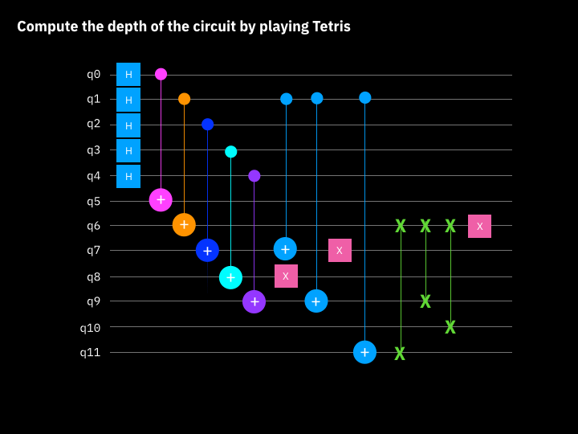

Essential Concepts and Definitions
Version 1.0 - Updated 06 April 2022
Quizlet Flash Cards - https://quizlet.com/_b8xkyl?x=1qqt&i=4c0ylj
Quantum ComputerA device that takes data as input and does some sort of operations on that data with a process that can only be described using quantum physics.
Quantum Computer (fourth grade explanation)A device like your graphics card. It’s specialized, supplementary hardware that can accelerate certain type of problems.
SuperpositionA weighted sum, or linear combination, of two or more quantum states. A quantum computer with n qubits can exist in a superposition of all 2^n of it’s computational basis states.
EntanglementA property of quantum systems comprised of more than one subsystems (i.e. qubits), where the quantum state of any one subsystem cannot be uniquely described independently of the remaining subsystems. eg. Multi blochsphere of a CNOT gate can’t be drawn.
What makes a quantum computer so powerful?Superposition on its own is no special thing, since a computer whose bits can be intermediate between 0 and 1 is just an analog computer, scarcely more powerful than an ordinary digital computer. However, a quantum computer takes advantage of a special kind of superposition that allows for exponentially many logical states at once, ALL the states...
Entanglement (alternate wording)The vast majority of quantum superpositions, and the ones most useful for quantum computation are entangled. Entangled states are states of the whole computer that do not correspond to any assignment of digital or analog states of the individual qubits.
Two counterintuitive principles of quantum physics- A physical system in a definite state can still behave randomly.
- Two systems that are too far apart to influence each other can nevertheless behave in ways that, though individually random, are somehow strongly correlated.
A reversible (unitary) operation applied to one or more qubits.
Quantum registerA collection of qubits on which gates and other operations act.
Classical registerConsists of bits that can be written to and read within the coherence time of the quantum circuit.
ShotBecause the measurement of a qubit in a superposition state is random - the outcome is sometimes 0 and sometimes 1 - you must repeat the measurement multiple times to determine the likelihood that a qubit is in a particular state.
StatevectorAny single realization of a quantum system can be described through a complex vector known as its statevector. In a gate-based quantum computer the state of n qubits has 2^n elements; the dimension of the statevector grows exponentially with n.
TranspilationIs the process where a quantum circuit is transformed into a new quantum circuit that performs the same task, but is restructured to be compatible with the physical layout of a particular quantum system and, where possible, optimizes its performance.
Uncertainty PrincipleIn quantum physics, we cannot simultaneously know two non-commuting variables (like the position and momentum of a particle). This implies that a quantum system in a perfectly definite state can be certain under one measurement and completely random under another. Moreover, if a quantum system starts out in an arbitrary unknown state, no measurement can reveal complete information about the state; the more information the measurement reveals, the more the state is disturbed.
Non-commutativeChanging the order of the operands changes the result. Commutativity is a property of two operators considered together. The means that the order you apply them matters.
TeleportationThere exists a theorem in quantum mechanics which states that you cannot simply make an exact copy of an unknown quantum state. This is known as the no-cloning theorem. However, by taking advantage of two classical bits and an entangled qubit pair, Alice can transfer her state to Bob. We call this teleportation because, at the end, Bob will have the state and Alice won't anymore.
AmplitudeAmplitudes are complex numbers, and each possible outcome has a corresponding amplitude. Amplitudes are analogous to conventional probabilities, as the magnitude of the amplitude is correlated to the chance of measuring that outcome. Unlike conventional probabilities, amplitudes have phase and can interfere with each other.
Statevector orderQiskit uses ordering that is different than most physics textbooks. It orders the n-th qubit on the left side. E.g. If qubit 0 is in state 0, qubit 1 is in state 0, and qubit 2 is in state 1, Qiskit would represent this state as |100>. Also, see circuit order.
Circuit orderQubit 0 is at the top and the n-th qubit is on the bottom. The circuit is read left to right (meaning that gates that are applied earlier in the circuit show up further to the left).
X gateNOT gate, flips the |0> state to |1> and vice versa. equivalent to RX gate for the angle π, or to “HZH”. Bit flip.
Y gateEquivalent to RY gate for the angle π. Equivalent to applying X and Z, up to a global phase factor. Bit flip and phase flip.
Z gateActs as an identity gate on the |0> state and multiplies the sign of the |1> state by -1. It therefore flips the |+> and |-> states. Phase flip.
I gateIdentity gate, absence of a gate. It ensures that nothing is applied to a qubit for one unit of gate time.
H gateHadamard gate, rotates the states |0> and |1> to |+> and |-> respectively. It is useful for making superpositions.
T gateEquivalent to RZ gate for the angle π/4. Two T gates = One S gate.
S gateEquivalent to RZ gate for the angle π/2. Applies a phase of i to the |1> state. Two S gates = One Z gate.
T-dagger gateInverse of T gate
S-dagger gateInverse of S gate
RX gateOn the Bloch sphere, this gate corresponds to rotating the qubit state around the x axis by the given angle.
RY gateOn the Bloch sphere, this gate corresponds to rotating the qubit state around the y axis by the given angle and does not introduce complex amplitudes.
RZ gateOn the Bloch sphere, this gate corresponds to rotating the qubit state around the z axis by the given angle. In IBM Quantum Composer, the default value for angle is π/2.
CNOT (CX)Applied to a pair of qubits. One acts as the control qubit (this is the one with the little dot). The other acts as the target qubit (with the big circle that has a + inside it). It does a "NOT" on the target if the control is 1, and does nothing otherwise.
CZLooks a like a swap gate, but instead of two X's has two dots (controls). Can also look like a CX gate, with one control and the target is a Z gate. Can be composed on a circuit with a sequence of H, CX, H gates.
Bell State50% probability of being measured in the state |00>, and 50% chance of being measured in the state |11>. 0% chance of being measured in the states |01> or |10>. This combined state cannot be written as two separate qubit states. Although our qubits are in superposition, measuring one will tell us the state of the other and collapse its superposition. Statevector of 0.707. Hadamard and then CNOT gate required to create a bell state.
CCNOT (CCX)Toffoli gate. Two controls, one target. Can be made by adding a control to a CX gate or using the "mct" method e.g. qc.mct([0,1], 2). If the control qubits are both set to 1, it inverts the third qubit, otherwise all qubits stay the same. Another way to create this gate is with the .ccx() method. The first two arguments are the controls, and the third argument is the target. E.g. .ccx(0,2,1) places the controls on qubit 0 and 2, and the target is on qubit 1.
Gates that can be composed of other gatesX = HXH, Z = HXH, HSH = HTTH
Phase gates that can be composed of other gatesS = TT (S = pi/2, T = pi/4), Z = SS (Z = pi), Z = TTTT
BasicAer Simulators"qasm_simulator", "statevector_simulator", "unitary_simulator". BasicAer is an older version of Aer (the larger and fancier simulation package).
BarrierUsed as a visual tool. Also an instruction for transpiler to stop it from cancelling out gates or collapsing gates into a single operation. Does not add to depth.
plot_bloch_vector vs. plot_bloch_multivectorplot_bloch_vector needs specific coordinates (cartesian or spherical).
plot_bloch_multivector needs a Statevector or DensityMatrix.
Neither can visualize entangled states. Use plot_state_qsphere instead.
Is the critical path, the longest path between data input and output. It's a measure of how many "layers" of quantum gates, executed in parallel, it takes to complete the computation defined by the circuit. This roughly corresponds to the amount of time it takes the quantum computer to execute the circuit. See image below for Tetris method.
 Gate map vs Error mapGate map shows the connections between nodes. Error map shows connections and error rate.
Execute vs Run"Execute" does both transpile and assemble.
"Run" only assembles (therefore needs to be transpiled first).
e.g. transpiled = transpile(qc, backend=backend)
job = backend.run(transpiled)
"job.wait_for_final_state()" better than "job.status()".
Or import from qiskit.tools, "job_monitor(job)".
Or import from qiskit.tools.jupyter, "% qiskit_job_watcher", which pops up a widget.
"qiskit.__version__" - shows only the version of the terra package.
"qiskit.__qiskit_version__" - shows versions of all packages (recommended).
Consists of bits that can be written to and read within the coherence time of the quantum circuit
Quantum RegisterA collection of qubits on which gates and other operations act.
Fidelities (credit: Kory Becker)Quantum fidelity allows you to obtain a measurement of the amount of distance between two quantum gates, states, or processes.
A formal definition states that quantum fidelity is a measure of how “close” two quantum states are, in that one state will effectively identify as another.
As a rule of thumb, fidelity is simply measuring the amount of “noise” that you can expect between your code and actual physical quantum hardware.
When a measurement for quantum fidelity is a value of 1, this refers to two states that are equivalent. Similarly, when considering only global phase between two operators using the same gate calculations, the result is an average gate fidelity and process fidelity of 1, since both average gate and process fidelities deal with global phase, compared to state fidelity which measures a single state vector.
state_fidelity(). Measures between two quantum states (such as statevectors or density matrix objects). Does not work with operators.
Process fidelityprocess_fidelity(). Measures the noise within a quantum channel or operator. Does work with operators.
Average gate fidelityaverage_gate_fidelity(). Measures the fidelity of multiple gates within a quantum channel. Note, average gate fidelity requires the channel and target operator to have the same dimensions and input/output dimensions. Does work with operators.
.to_gate() methodCreates a custom gate out of a circuit.
.append() methodAppend one or more instructions to the end of the circuit, modifying the circuit in place.
.compose() methodUsed to combine circuits with different number of qubits. If same number of qubits, use Python's addition operator. Note: You can combine quantum circuits together inline and perform operations. e.g. (qc1+qc2).draw()
Density MatrixAn alternative way of expressing quantum states, that allows for pure states and mixed states. Mixed states are those that consist of statistical ensembles of different quantum states. This means that, unlike pure states, mixed states cannot be represented as linear superpositions of normalized state vectors.
qasm_simulatorAllows ideal and noisy multi-shot execution of qiskit circuits and returns counts or memory. Allows for measurements, reset, conditionals.
statevector_simulatorAllows ideal single-shot execution of qiskit circuits and returns the final statevector of the simulator after application. Allows for measurements, reset, conditionals.
unitary_simulatorAllows ideal single-shot execution of qiskit circuits and returns final unitary matrix of the circuit itself. Allows only gates. Circuit cannot contain measure or reset operations for this backend.
Converting a quantum circuit to and from QASM.to_qasm() or .qasm() - to convert to QASM.
.from_qasm_str() or .from_qasm_file() - to convert from QASM.
Set the argument for the optimization_level to a high number. This tells the transpiler how aggressively to optimize circuit. The default level is 1 which optimizes by collapsing adjacent gates. The highest level is 3 in which the transpiler will use noise adaptive qubit mapping, gate cancellation using commutativity rules, and unitary synthesis. 0 means no optimization is done, other than mapping the circuit to the backend.
Bloch sphereVisualization for plotting any single qubit state on the surface of a sphere. It's easy to confuse the qubits statevector with its Bloch vector. Remember the statevector holds the amplitudes for the two states a qubit can be in. The Bloch vector is a visualization tool that maps the 2D, complex statevector onto real, 3D space.
Q-sphereVisualization for multiqubit states. The Q-sphere displays the amplitudes of each computational basis state. Amplitudes are complex numbers. The size of each blob represents the magnitude of that complex number. The blob at the top represents the state 0, and the blob on the bottom represents the state 1. For general qubit states, the polar angle of the blob is proportional to its hamming distance from the the all zero state, with the all one state on the bottom.
Bloch sphere vs Q-sphereA bloch sphere can only visualize one qubit and it gives you a local view. A q-sphere can visualize up to 5 qubits and it gives you a global view, a whole picture of the quantum state.